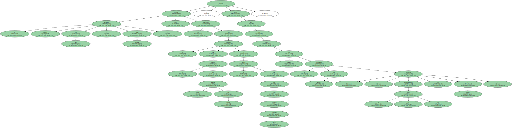
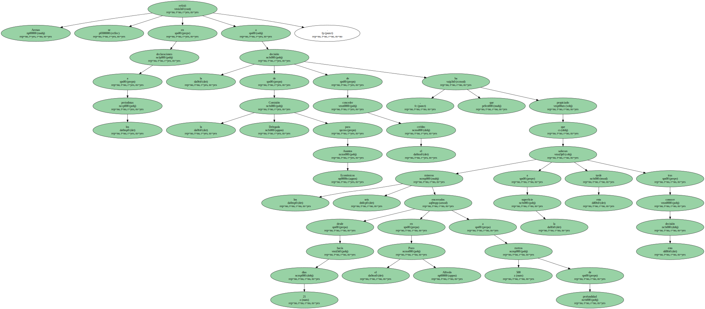
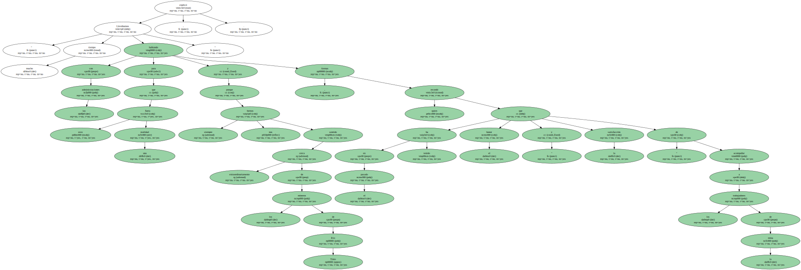
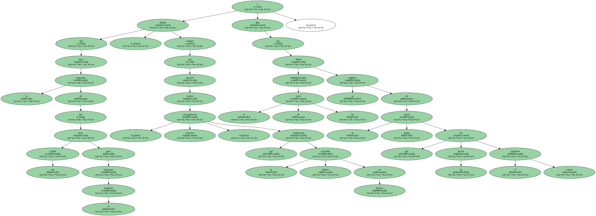

El secretario general del PP , Javier Arenas , expresó hoy su satisfacción por la concesión de un crédito de 1.000 millones de pesetas a las Minas de Río Tinto Sociedad Anónima Laboral , y deseó que " igual que ha hecho el Gobierno de España , el resto de las administraciones se impliquen a fondo ".
Arenas se refirió en declaraciones a los periodistas a la decisión de la Comisión Delegada para Asuntos Económicos de conceder el crédito , que ha propiciado que los seis mineros encerrados desde hacía 21 días en el Pozo Alfredo a 500 metros de profundidad salieran a la superficie esta tarde tras conocer esta decisión.

El secretario general del PP expresó su " gran satisfacción " por esta noticia y dijo que esta resolución se ha producido gracias a las gestiones llevadas a cabo por el alcalde de Huelva , Pedro Rodríguez ( PP ) ; la presidenta del PP andaluz , Teófila Martínez , y el secretario general del PP-A , Antonio Sanz.
" Llevábamos mucho tiempo hablando con las administraciones para que esto fuera una realidad y porque siempre nos hemos sentido extraordinariamente cerca de los mineros de Río Tinto " , explicó Arenas , quien recordó que en el pasado ha tenido " el honor y la satisfacción " de acompañar a los trabajadores de la mina.
Señaló que tiene la esperanza de que este crédito sirva para solucionar el problema , aunque precisó que existen " circunstancias externas " que condicionan la actividad minera en Huelva y dijo que el resto de las administraciones se deben implicar de la misma forma que lo ha hecho el Gobierno central.
